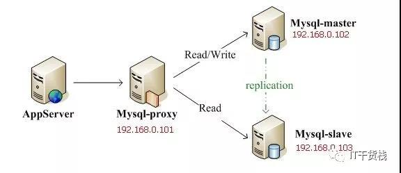
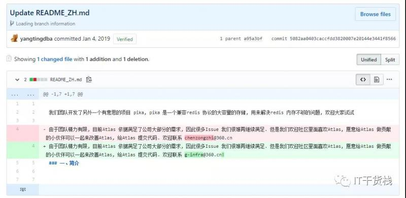
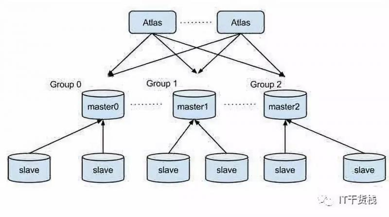
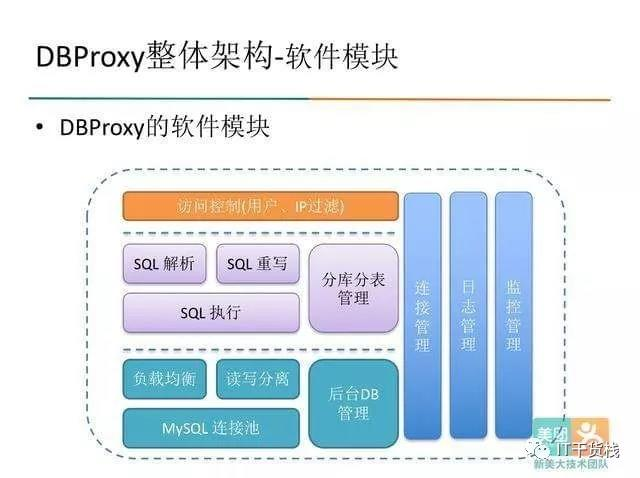
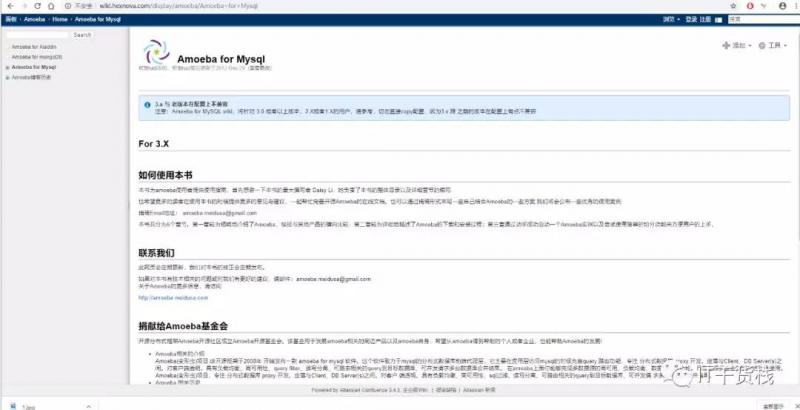
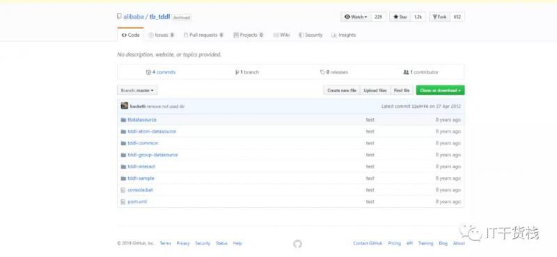

hello 各位小伙伴大家好，我是小栈君，这期我们分享关于mysql中间件的研究，也就是数据层的读写分离和负载均衡，希望能够在实际的应用中能够帮助到各位小伙伴。
下期我们将继续分享go语言的系列讲解，以及以后的生活中我们也将会分享系列课程包括大数据、人工智能、区块链等等，希望大家能够多多学习和分享给身边的小伙伴，我们一起进步和成长。
mysql-proxy
MySQL Proxy就是这么一个中间层代理，简单的说，MySQL Proxy就是一个连接池，负责将前台应用的连接请求转发给后台的数据库，并且通过使用lua脚本，可以实现复杂的连接控制和过滤。
从而实现读写分离和负载平衡。对于应用来说，MySQL Proxy是完全透明MySQL Proxy更强大的一项功能是实现“读写分离”，基本原理是让主数据库处理事务性查询。
它的执行流程如图所示：

让从库处理SELECT查询。数据库复制被用来把事务性查询导致的变更同步到集群中的从库。
mysql-proxy是官方提供的mysql中间件产品可以实现负载平衡，读写分离，failover等，但其不支持大数据量的分库分表且性能较差。
官网:
https://downloads.mysql.com/archives/proxy/
下面介绍几款能代替其的mysql开源中间件产品，Atlas，cobar，tddl，让我们看看它们各自有些什么优点和新特性吧。
Atlas
Atlas是由 Qihoo 360, Web平台部基础架构团队开发维护的一个基于MySQL协议的数据中间层项目。
它是在mysql-proxy 0.8.2版本的基础上，对其进行了优化，增加了一些新的功能特性。360内部使用Atlas运行的mysql业务，每天承载的读写请求数达几十亿条。
源码:
Github：https://github.com/Qihoo360/Atlas
但是据最新的消息是因为Atlas已经能够满足大多数公司的业务需求，所以进行了停止更新。

Altas架构：

Atlas是一个位于应用程序与MySQL之间，它实现了MySQL的客户端与服务端协议，作为服务端与应用程序通讯，同时作为客户端与MySQL通讯。
它对应用程序屏蔽了DB的细节，同时为了降低MySQL负担，它还维护了连接池。
Altas的一些新特性：
1、主库宕机不影响读主库宕机，Atlas自动将宕机的主库摘除，写操作会失败，读操作不受影响。从库宕机，Atlas自动将宕机的从库摘除，对应用没有影响。在mysql官方的proxy中主库宕机，从库亦不可用。
2.通过管理接口，简化管理工作，DB的上下线对应用完全透明，同时可以手动上下线。
3.自己实现读写分离，为了解决读写分离存在写完马上就想读而这时可能存在主从同步延迟的情况，Altas中可以在SQL语句前增加 /master/ 就可以将读请求强制发往主库。主库可设置多项，用逗号分隔，从库可设置多项和权重，达到负载均衡。
4.自己实现分表，需带有分表字段。而且支持SELECT、INSERT、UPDATE、DELETE、REPLACE语句。最后支持多个子表查询结果的合并和排序。
这里不得不吐槽Atlas的分表功能，不能实现分布式分表，所有的子表必须在同一台DB的同一个database里且所有的子表必须事先建好，Atlas没有自动建表的功能。
5.之前官方主要功能逻辑由使用lua脚本编写，效率低，Atlas用C改写，QPS（对一个特定的查询服务器在规定时间内所处理流量多少的衡量标准）提高，latency(一个指令发出 到 抵达 耗用的时间)降低。
6.安全方面的提升：通过配置文件中的pwds参数进行连接Atlas的用户的权限控制。通过client-ips参数对有权限连接Atlas的ip进行过滤。
日志中记录所有通过Altas处理的SQL语句，包括客户端IP、实际执行该语句的DB、执行成功与否、执行所耗费的时间
7.平滑重启通过配置文件中设置lvs-ips参数实现平滑重启功能，否则重启Altas的瞬间那些SQL请求都会失败。
DBProxy
DBProxy是由美团点评公司技术工程部DBA团队（北京）开发维护的一个基于MySQL协议的数据中间层。它在奇虎360公司开源的Atlas基础上，修改了部分bug，并且添加了很多特性。

目前DBProxy在美团点评广泛应用，包括美团支付、酒店旅游、外卖、团购等产品线，公司内部对DBProxy的开发全面转到github上，开源和内部使用保持一致。目前只支持MySQL（Percona）5.5和5.6。
主要功能：
读写分离
从库负载均衡
IP过滤
分表
DBA可平滑上下线DB
自动摘除宕机的DB
监控信息完备SQL过滤
从库流量配置
使用DBProxy之后，应用程序只需要在连接串中设置DBProxy的地址，不需要关注整个数据库集群的结点；
DBProxy内部实现负载均衡，读写分离；
Slave上下线的操作由DBA在自动化运营系统上点一下鼠标就能够完成。
这样极大的减轻了DBA和应用开发人员的工作；而没有DBProxy的情况下，这些工作是由RD来实现的，引入DBProxy对于系统的可管理性和便利性都有非常大的帮助。
DBProxy是基于奇虎360开源的Altas进行改进，官方文档上说明了改进的点有：
提供了丰富的监控信息，大量参数可配置化并且支持动态修改
对原有的诸如日志等模块进行了优化，性能提升明显
开源版本即为目前美团点评内部使用版本，并将一直对源码及其文档进 行维护
开源地址：
https://github.com/Meituan-Dianping/DBProxyAmoeba
Amoeba是一个以MySQL为底层数据存储，并对应用提供MySQL协议接口的proxy。它集中地响应应用的请求，依据用户事先设置的规则，将SQL请求发送到特定的数据库上执行。
基于此可以实现负载均衡、读写分离、高可用性等需求。与MySQL官方的MySQL Proxy相比，作者强调的是amoeba配置的方便（基于XML的配置文件，用SQLJEP语法书写规则，比基于lua脚本的MySQL Proxy简单）。
Amoeba相当于一个SQL请求的路由器，目的是为负载均衡、读写分离、高可用性提供机制，而不是完全实现它们。
用户需要结合使用MySQL的 Replication等机制来实现副本同步等功能。amoeba对底层数据库连接管理和路由实现也采用了可插拨的机制，第三方可以开发更高级的策略类来替代作者的实现。
Amoeba优点：
a). 数据切分后复杂数据源整合
b). 提供数据切分规则并降低数据切分规则给数据库带来的影响
c). 降低数据库与客户端连接
d). 读写分离路由
Amoeba缺点：
a)、目前还不支持事务
b)、暂时不支持存储过程（近期会支持）
c)、不适合从amoeba导数据的场景或者对大数据量查询的query并不合适（比如一次请求返回10w以上甚至更多数据的场合）
d)、暂时不支持分库分表，amoeba目前只做到分数据库实例，每个被切分的节点需要保持库表结构一致：
官方网站：
http://wiki.hexnova.com/display/amoeba/Home
遗憾的是年代久远，网站资料更新时间位于2012年

alibaba.cobar
Cobar是阿里巴巴（B2B）部门开发的一种关系型数据的分布式处理系统，它可以在分布式的环境下看上去像传统数据库一样为您提供海量数据服务。那么具体说说我们为什么要用它，或说cobar--能干什么？
cabar优点总结：
数据和访问从集中式改变为分布：
Cobar支持将一张表水平拆分成多份分别放入不同的库来实现表的水平拆分
Cobar也支持将不同的表放入不同的库
多数情况下，用户会将以上两种方式混合使用注意！：Cobar不支持将一张表，例如test表拆分成test_1,test_2, test_3.....放在同一个库中，必须将拆分后的表分别放入不同的库来实现分布式。
解决连接数过大的问题。
对业务代码侵入性少。
提供数据节点的failover,HA：(1)Cobar的主备切换有两种触发方式，一种是用户手动触发，一种是Cobar的心跳语句检测到异常后自动触发。
那么，当心跳检测到主机异常，切换到备机，如果主机恢复了，需要用户手动切回主机工作，Cobar不会在主机恢复时自动切换回主机，除非备机的心跳也返回异常。
Cobar只检查MySQL主备异常，不关心主备之间的数据同步，因此用户需要在使用Cobar之前在MySQL主备上配置双向同步。
cobar缺点：开源版本中数据库只支持mysql，并且不支持读写分离。
TDDL(核心层代码没有开源)
淘宝根据自己的业务特点开发了TDDL（Taobao Distributed Data Layer 外号:头都大了）框架，主要解决了分库分表对应用的透明化以及异构数据库之间的数据复制，它是一个基于集中式配置的 jdbc datasource实现，具有主备，读写分离，动态数据库配置等功能。
TDDL所处的位置（tddl通用数据访问层，部署在客户端的jar包，用于将用户的SQL路由到指定的数据库中）：
淘宝很早就对数据进行过分库的处理， 上层系统连接多个数据库，中间有一个叫做DBRoute的路由来对数据进行统一访问。
DBRoute对数据进行多库的操作、数据的整合，让上层系统像操作一个数据库一样操作多个库。但是随着数据量的增长，对于库表的分法有了更高的要求。
例如，你的商品数据到了百亿级别的时候，任何一个库都无法存放了，于是分成2个、4个、8个、16个、32个……直到1024个、2048个。
分成这么多，数据能够存放了，那怎么查询它？
这时候，数据查询的中间件就要能够承担这个重任了，它对上层来说，必须像查询一个数据库一样来查询数据，还要像查询一个数据库一样快（每条查询在几毫秒内完成），TDDL就承担了这样一个工作。
主要优点：
数据库主备和动态切换
带权重的读写分离
单线程读重试
集中式数据源信息管理和动态变更
稳定jboss数据源
支持mysql和oracle数据库
基于jdbc规范，很容易扩展支持实现jdbc规范的数据源
无server,client-jar形式存在，应用直连数据库
读写次数,并发度流程控制，动态变更10.可分析的日志打印,日志流控，动态变更TDDL必须要依赖diamond配置中心（diamond是淘宝内部使用的一个管理持久配置的系统，目前淘宝内部绝大多数系统的配置，由diamond来进行统一管理，同时diamond也已开源）。
源码：
https://github.com/alibaba/tb_tddl
TDDL复杂度相对较高。而且已经年久失修了

当前公布的文档较少，只开源动态数据源，分表分库部分还未开源，还需要依赖diamond，不推荐使用。
今天的分享就到这里就结束啦，如果你喜欢我的分享，麻烦你点击再看，分享或留言，我是小栈君，我们下期见，拜了个拜~
本文由博客一文多发平台 OpenWrite 发布！